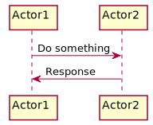

Markdown Mindmap
You can use install via NPM:
$ npm install gitbook-plugin-mindmap-7dtime
And use it for your book with in the book.json:
{
"plugins": ["mindmap-7dtime"]
}
- 顶层
- 二层
- 下一层
- 接下来
- 二层1
- next
- then
plantuml

Codeblock
Python Code
helloworld.py
#!/usr/bin/env python
# coding=utf-8
import sys
def main():
print("hello world")
main()
LaTeX
点到一条折线的最短距离和贴路点
说明：
- Point:(x,y)
- Polyline:(x1,y1),(x2,y2)...(xn,yn)
- i,j,k,l,m,p∈[1,n]
若(x,y)满足条件如下条件
- xk<x<xl,ym<y<yp
- i=MIN(k,l,m,p),j=MAX(k,l,m,p)
则点(x,y)到有序折线Polyline:(x1,y1),(x2,y2)...(xn,yn)最短距离的交点(垂心)在(xi,yi)到(xj,yj)的折线之间。